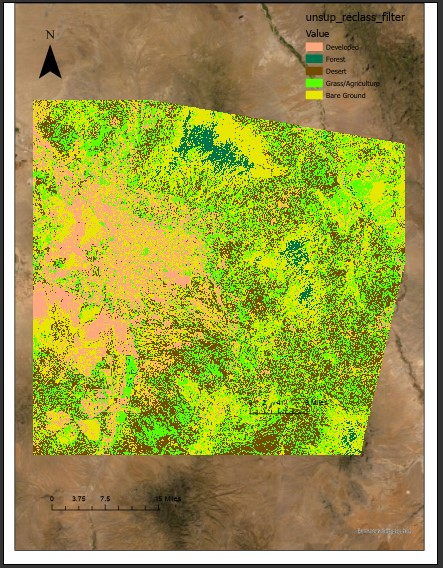

Other Projects
Examples of other projects, maps, and analysis I have created and performed.
Southern Arizona Development: Using Remote Sensing to Map the Change from Desert Landscape to Development

Abstract
The Tucson Arizona Metropolitan area includes 20 different towns and cities within a 1,987 square mile area, and nearly 1 million people (USA.com). The population growth between 2002 - 2016 has been around 4% (Census.gov). By using remote sensing we can see the amount of desert landscape that has been developed to accommodate this population growth. By undergoing an unsupervised classification and calculating a change matrix the results are that 14.72% of desert landscape has been developed on. This overdevelopment of desert landscaping has far outpaced population growth.Full Paper Can Be Found Here
The Comparison of Closed Restaurants and other COVID related Factors on Mill Ave in Tempe, AZ
Southern Arizona Development: Using Remote Sensing to Map the Change from Desert Landscape to Development